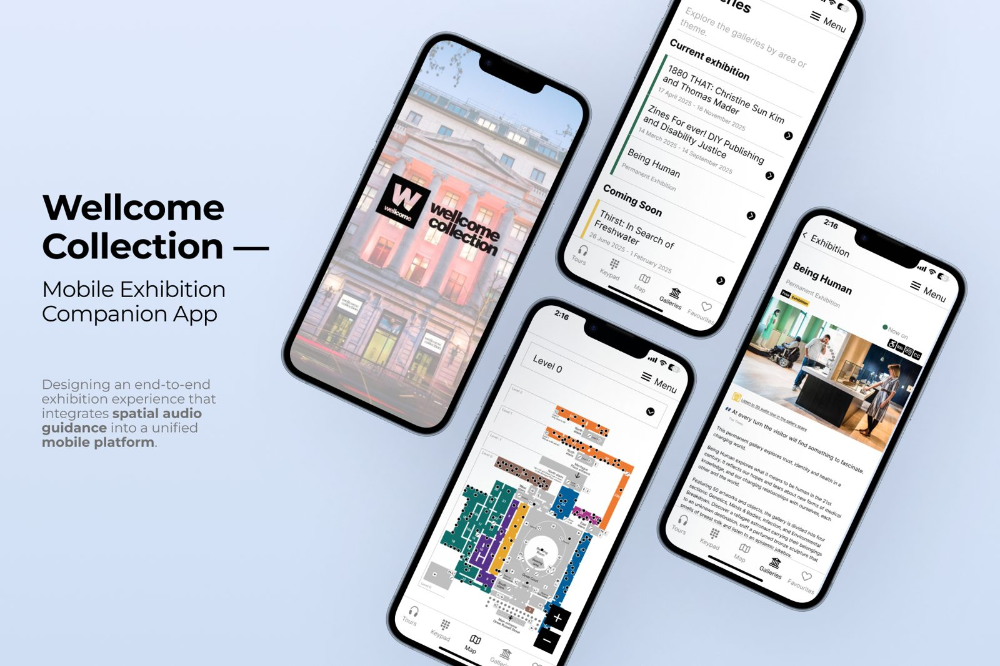
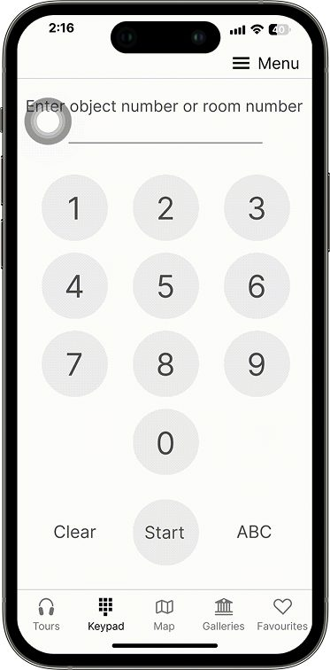
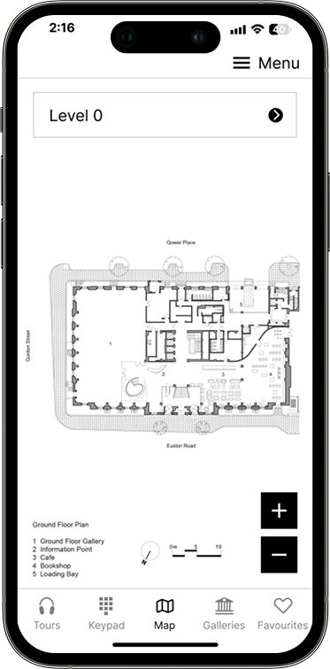
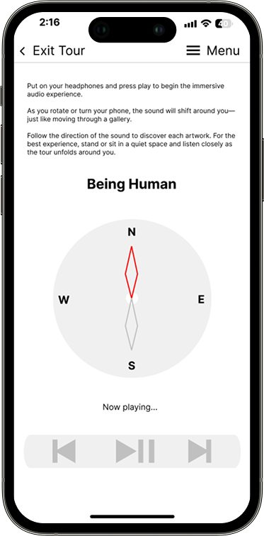
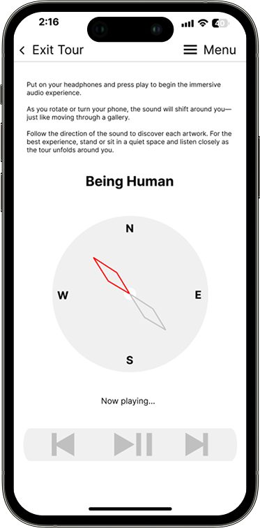
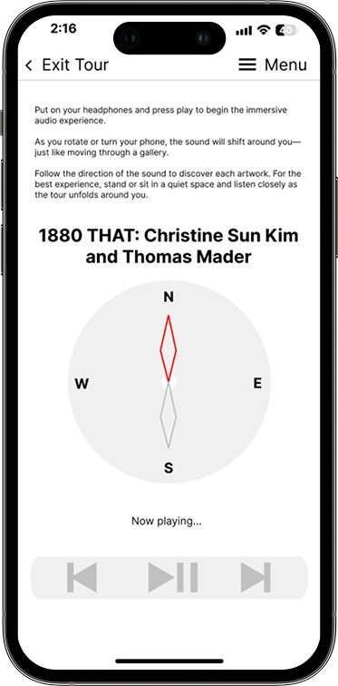
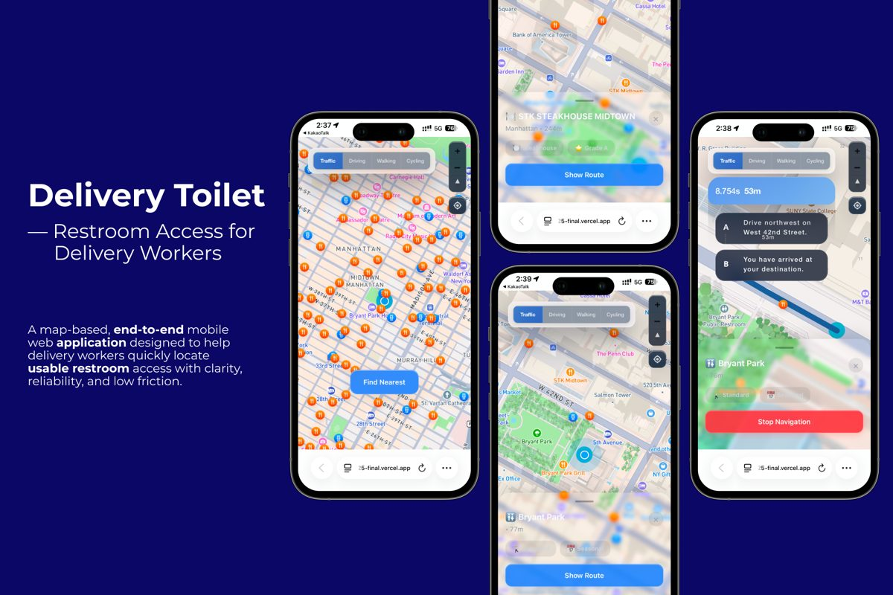

Wellcome Collection
A mobile exhibition companion that brings exhibition content, the audio guide and spatial audio guidance into one app.
[Prototype link]
1. Overview
One app for the whole museum visit
Wellcome Collection is a museum in central London built on the belief that everyone's experience of health matters. Its exhibitions aim to include visitors with different needs.
2. Problem
Information is split across print, web and borrowed devices
What the museum wanted
- A more accessible and inclusive visit, with fewer barriers.
- Clear, on-demand help for different access needs.
- Accessible ways to experience exhibitions, like audio description.
The friction
- Exhibition info lives mostly on the web.
- The audio guide can mean borrowing a device or hunting for a page.
- This hits blind and low-vision visitors hardest, right when they are moving.
3. Research
What "accessible" means to a visitor
I audited the museum's physical and digital touchpoints through field observation and competitive scanning.
How I tested and refined it
- 01Wireframes and sketchesTested guided discovery on mobile, with an optional spatial audio tour.
- 02Audit, observation and feedbackWeb-first content and a separate audio guide caused friction, so I moved to one app.
- 03Prototype v1 to v2Usability tests in Figma refined navigation, content access and the guidance flow.
4. Solution
Content, audio guide and wayfinding in one flow
Gallery discovery
What's on, exhibition summaries and locations in a native, scannable list.
Demo: scrolling the Galleries list of current and upcoming exhibitions.
Audio guide inside the visit
Start the audio guide straight from an exhibition page. No borrowed device.
Demo: opening the Being Human exhibition page and its audio guide.
Keypad lookup
Type a room or object number to jump to it, without digging through menus.

Multi-level wayfinding
A floor plan for every level shows where galleries and amenities are. A visitor hub keeps opening times, step-free routes and contact links in one place.

Concept extension: spatial audio wayfinding
When tactile cues are not consistent across floors, an optional spatial audio mode helps blind and low-vision visitors move between stops. The sound shifts as the visitor turns.



[Audio samples of the spatial guide go here, each with a Play button and a transcript.]
5. Reflection
A tested structure, ready for the gallery
Next for the app
- Pilot usability tests in the gallery.
- Check every accessibility mode end to end: screen reader, text scaling, reduced motion, high contrast.
- Prototype spatial audio with NFC or QR start points.
- Connect content to before, during and after the visit.
What I took away
- When accessibility leads the structure, the experience is clearer for everyone.
- Designing for in-the-moment use means clarity and timing come before feature count.
- Prototyping is a tool for thinking and alignment, not only validation.
See next project
Toilet Delivery
A map-based web app that helps delivery workers find a usable restroom, fast.
